01 / Meet the Designer
Hi, I’m Yixiao.
UX & Product Designer
I started with physical products. At Rutgers, I’m bringing that perspective to digital experiences.
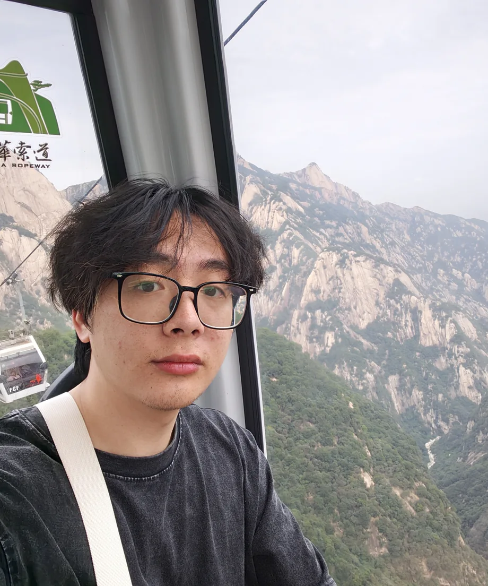
02 / My Journey
From objects to interfaces.
Fuzhou University
Industrial design undergraduate studies.
Rutgers University
Master of Business & Science · User Experience Design.
Wuhan Marine Machinery
Summer 2026 UX/UI internship on an enterprise mobile platform.
Read the case study
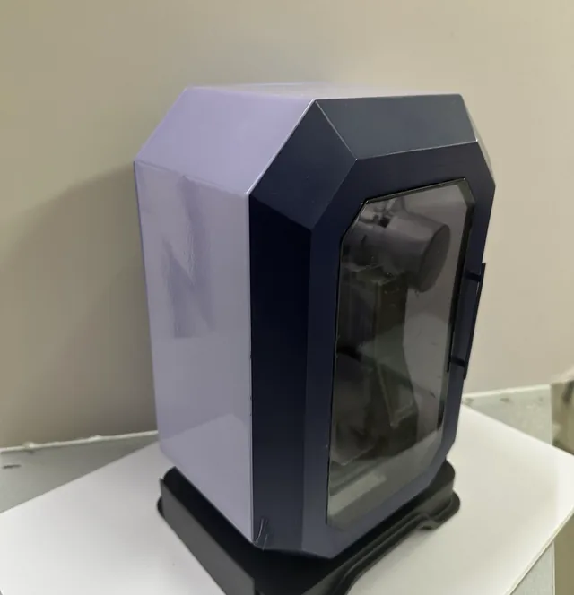
03 / How I Think & Make
From notes to a working prototype.
I map the task, sketch options, then test the flow. AI helps organize notes and build prototypes. I check the output and make the design decisions.
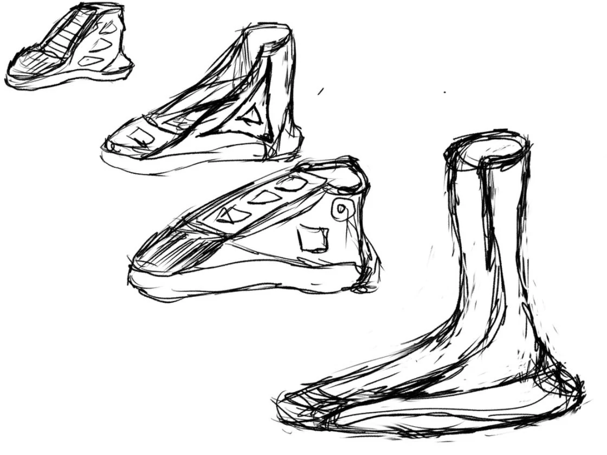
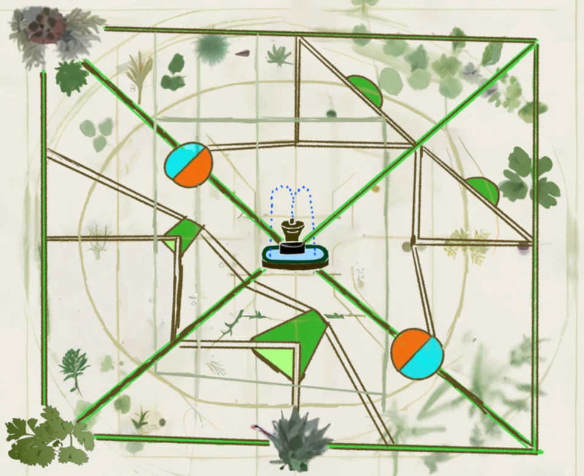
04 / Beyond the Screen
A route, a riff, a race.
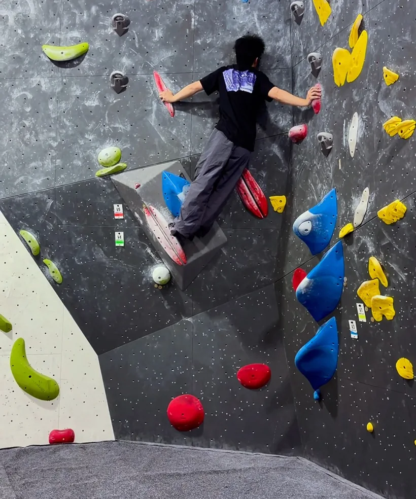
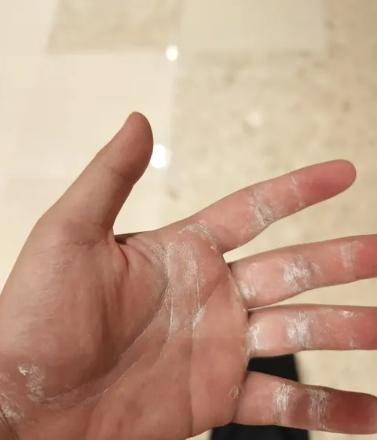
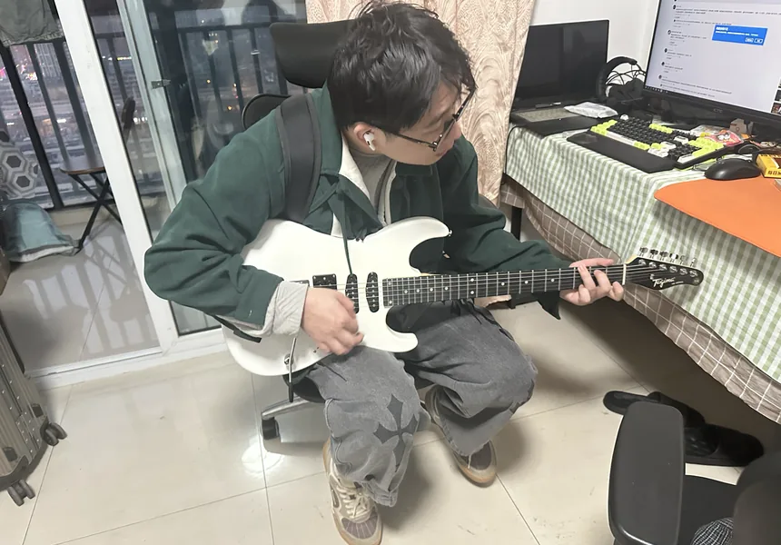
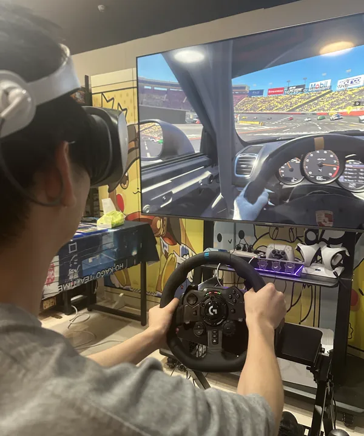
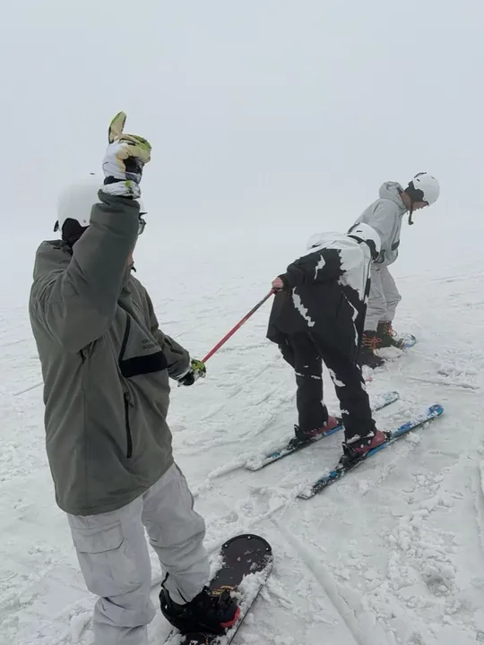
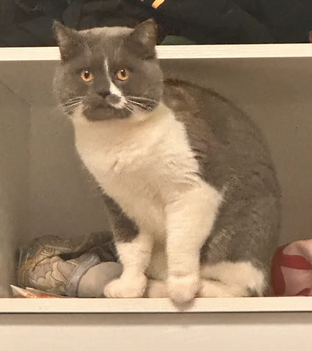
From my Steam library
-
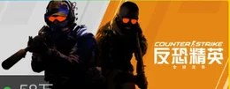
Counter-Strike 2650 hours
-
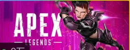
Apex Legends525 hours
-
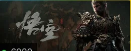
Black Myth: Wukong67 hours
-
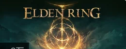
Elden Ring42 hours
Playtime from my Xiaoheihe snapshot, May 2026.